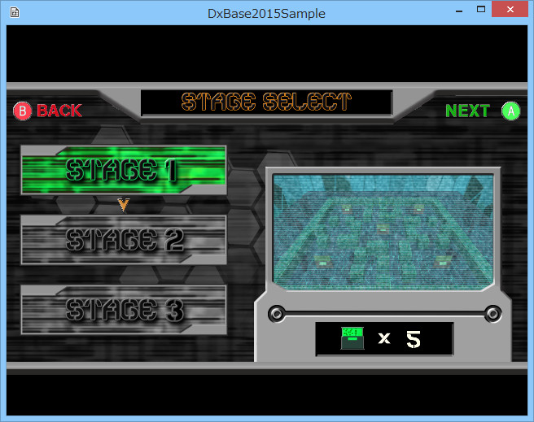

３０７．メニューでのSpriteStdio5データの活用（学生サンプル）
このサンプルはWiZの学生
荻野 彩樹君、古川 拓也君が作成した、
SpriteStdio5データを使った
メニューのサンプルです。
ここでは、
ステートと項目選択用のSpriteStdio5データを組み合わせることにより、すっきりとして可読性が高い実装を実現しています。
メニューの操作方法
Sample307ディレクトリ内のソリューションを開き、「リビルド」「デバックなしで実行」すると、オープニングアニメーションを経て、以下の画面が現れます。
汎用性が高いので、実際に自分のゲームにメニューを実装する際も、大いに参考になるでしょう。

図3007a
コントローラの左スティックを上下するとメニューが切り替わります。
速度が速いのでちょっと見ると見過ごしてしまいますが、メニューが切り替わる際も短いアニメーションが再生されて、選択項目が切り替わります。また、項目移動や決定時に、サウンドも実装されています。
Aボタンで、選択されたステージが呼ばれるという想定ですが。サンプルで呼ばれるのは、どの選択でも
３０６．SpriteStdio5データの再生と操作で紹介したステージです。
ゲーム画面になった後は、
Bボタンでメニューに戻ります。
SpriteStdio5データの内容
このメニューステージが読み込んでいる
SpriteStdio5データは１つです。
media/StageSelect/StageSelect.ssaeです。
この中に、いくつもの種類のアニメーションが、細かく小分けされて実装されています。
すなわち
「オープニング」「メニュー１が選択されている状態」「メニュー１からメニュー２に移動している状態」「メニュー２が選択されている状態」．．．のような形です。
これを、
ステートによって振り分けて再生しています。
オープニングから、メニュー１が選択されている状態まで
以下は、オープニングアニメーションのステートです。メニューは
StageSelectAnimation.h、cppに実装されていて、オープニングは
OpeningStateです。
Execute()関数のみ実装されています。
void OpeningState::Execute(const shared_ptr<StageSelectAnimation>& Obj)
{
if( Obj->IsAnimeEnd() ) {
Obj->GetStateMachine()->ChangeState( OpenToStage1State::Instance() ) ;
}
}
このように、アニメーションの終了を待って、次のステート
OpenToStage1Stateに移行しています。
ここから呼び出している
IsAnimeEnd()関数は、これまでも説明してきた
モーション関数です。
今実行しているアニメーションが終了したかどうかを調べます。実装されてるアニメーションは選ばないので、汎用的に使用できます。
このように
項目移動用のアニメーションと連動するステートは同様の構造になっています。
項目の選択
どこかの項目が選択されている状態で、
Aボタンが押されるのをキャッチするステートの実体は以下のようになってます。
メニュー１がAボタンによって選択されるを例に紹介します。
void NoiseStage1State::Execute(const shared_ptr<StageSelectAnimation>& Obj)
{
// : コントローラ情報の取得.
auto CntlVec = App::GetApp()->GetInputDevice().GetControlerVec();
// : Aボタンが押されたら.
if ( CntlVec[0].wPressedButtons & XINPUT_GAMEPAD_A ) {
// : ステージを決定.
Obj->GetStateMachine()->ChangeState( DecideStage1State::Instance() ) ;
}
// : スティックが倒されたら.
if ( Obj->GetIsCursorMove() && CntlVec[0].fThumbLY <= -Obj->GetCursorLimit() ) {
// : 選択を移動.
Obj->GetStateMachine()->ChangeState( Stage1ToStage2State::Instance() ) ;
Obj->SetIsCursorMove( false ) ;
}
}
このように、Aボタンが押されたタイミングで、
DecideStage1Stateに移行します。このステートでは
項目１のステージの呼び出しを行います。
以下が実体です。
void DecideStage1State::Enter(const shared_ptr<StageSelectAnimation>& Obj)
{
Obj->ChangeAnimation( L"Decide_Stage1" ) ;
Obj->SetFps(60.0f);
Obj->SetLooped( false ) ;
Obj->PlaySE(L"Decide") ;
}
ここでは、
Enter()関数で、選択項目を決定して、1回だけサウンドを再生します。また選択アニメーションをスタートさせます。実際のステージ切り替えの処理は、
Excute()関数で行っています。
void DecideStage1State::Execute(const shared_ptr<StageSelectAnimation>& Obj)
{
if( Obj->IsAnimeEnd() ) {
Obj->PostEvent(0, Obj->GetThis<StageSelectAnimation>(),
App::GetApp()->GetSceneBase(), L"ToGame");
}
}
項目選択アニメーションの終了を待って、、ステージ以降
PostEvent()呼び出しを行っているのがわかります。
メニューの動きを小分けにする
以上のように、このサンプルでは
メニューを選択するというシンプルな操作を実装するのに、実に多くの処理を行っているのがわかります。
しかしこのように、アニメーションを小分けにし、対応するステートも細かく分けることで、
それぞれの処理を分離できるので、変更や、追加等に、素早く、バグが少なく対処できます。
メニュー項目の追加、などは、頻繁に起こります。しかし、その都度、メニューの全ソースを見直し追加項目に対応するよう記述するのは大変です。
そのためのテクニックはいろいろあるかと思いますが、今回のサンプルの例のように、
SpriteStdio5データとステートを組み合わせることにより、追加前に実装されてるメニューの項目実装とは分離して作成できるので、バグも少なくなり、可読性も維持したまま実装可能です。